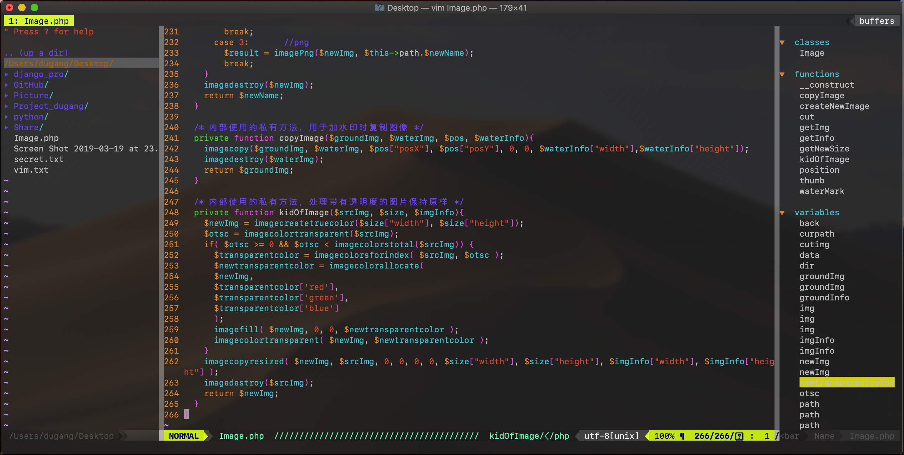

Vim is one of the most popular text editors on linux, and it is a very powerful editor.
Next, I take CentOS as an example to introduce the configuration of my vim.
Live Demo

Install Vim
1 | ./configure --with-features=huge --enable-multibyte --enable-rubyinterp=yes --enable-pythoninterp=yes --enable-python3interp=yes --enable-luainterp --enable-perlinterp --enable-cscope |
Install Vundle
Vundle is short for Vim bundle and is a Vim plugin manager.
.
Vundle allows you to…
- keep track of and configure your plugins right in the .vimrc
- install configured plugins (a.k.a. scripts/bundle)
- update configured plugins
- search by name all available Vim scripts
- clean unused plugins up
- run the above actions in a single keypress with interactive mode
Vundle automatically…
- manages the runtime path of your installed scripts
- regenerates help tags after installing and updating
Install Git
If your Linux does not install git, install it using the following commands.Because the git clone command is used during installation.sudo yum install git
Set up Vundle
Install Vundle using the following commandsgit clone https://github.com/VundleVim/Vundle.vim.git /.vim/bundle/Vundle.vim
Configure Plugins
Put this at the top of your .vimrcto use Vundle. Remove plugins you don’t need, they are for illustration purposes.1
2
3
4
5
6
7
8
9
10
11
12
13
14
15
16
17
18
19
20
21
22
23
24
25
26
27
28
29
30
31
32
33
34
35
36
37
38
39
40
41
42
43set nocompatible " be iMproved, required
filetype off " required
" set the runtime path to include Vundle and initialize
set rtp+=/.vim/bundle/Vundle.vim
call vundle#begin()
" alternatively, pass a path where Vundle should install plugins
"call vundle#begin('/some/path/here')
" let Vundle manage Vundle, required
Plugin 'VundleVim/Vundle.vim'
" The following are examples of different formats supported.
" Keep Plugin commands between vundle#begin/end.
" plugin on GitHub repo
Plugin 'tpope/vim-fugitive'
" plugin from http://vim-scripts.org/vim/scripts.html
" Plugin 'L9'
" Git plugin not hosted on GitHub
Plugin 'git://git.wincent.com/command-t.git'
" git repos on your local machine (i.e. when working on your own plugin)
Plugin 'file:///home/gmarik/path/to/plugin'
" The sparkup vim script is in a subdirectory of this repo called vim.
" Pass the path to set the runtimepath properly.
Plugin 'rstacruz/sparkup', {'rtp': 'vim/'}
" Install L9 and avoid a Naming conflict if you've already installed a
" different version somewhere else.
" Plugin 'ascenator/L9', {'name': 'newL9'}
" All of your Plugins must be added before the following line
call vundle#end() " required
filetype plugin indent on " required
" To ignore plugin indent changes, instead use:
"filetype plugin on
"
" Brief help
" :PluginList - lists configured plugins
" :PluginInstall - installs plugins; append `!` to update or just :PluginUpdate
" :PluginSearch foo - searches for foo; append `!` to refresh local cache
" :PluginClean - confirms removal of unused plugins; append `!` to auto-approve removal
"
" see :h vundle for more details or wiki for FAQ
" Put your non-Plugin stuff after this line
Install Vim Plugins
With the :PluginInstallcommand, Vundle automatically downloads and installs the Vim plugin from github.com or vim-scripts.org.
Configuration of .vimrc
Installation Plugins from github:Plugin ‘user/plugin’
Installation Plugins from http://vim-script.org/vim/scripts.html:Plugin ‘plugin_name’
Installation Plugins from another github repositories:Plugin ‘git://git.another_repo.com/plugin’
Install Plugins
Launch vim and run :PluginInstall
To install from command line:vim +PluginInstall +qall
Vundle commands
Install new plug-ins
The command PluginInstall can install all the plug-ins listed in your .vimrc. You could also install only one specific plug-in by passing its name.:PluginInstall:PluginInstall <plugin-name>
Clean up unused plug-ins
The command PluginClean can clean up any plugins you have unused.:PluginClean
Search plug-in
The search function is useful if you want to install a plugin from the list of plugins provided.
During the search, you can install, clean, research, or reload the same list on the interactive split screen. Install the plugin does not automatically load your plugin, if you want to automatically load the plugin and add the plugin to your .vimrc, such as :PluginSearch taglist, after completing the search, you can press ‘i’ to install.:PluginSearch <text-list>
Vim Plugin recommendation
The VIM plug-in can greatly improve the efficiency of vim usage. Here I introduce several better VIM plug-ins and show my VIM configuration file.
VIM Plugin
- nerdtree
- vim-airline
- vim-airline-themes
- tagbar
- nerdcommenter
- auto-pairs
- DoxygenToolkit
- Pydiction
.vimrc
Here is the .vimrc on my linux1
2
3
4
5
6
7
8
9
10
11
12
13
14
15
16
17
18
19
20
21
22
23
24
25
26
27
28
29
30
31
32
33
34
35
36
37
38
39
40
41
42
43
44
45
46
47
48
49
50
51
52
53
54
55
56
57
58
59
60
61
62
63
64
65
66
67
68
69
70
71
72
73
74
75
76
77
78
79
80
81
82
83
84
85
86
87
88
89
90
91
92
93
94
95
96
97
98
99
100
101
102
103
104
105
106
107
108
109
110
111
112
113
114
115
116
117
118
119
120
121
122
123
124
125
126
127
128
129
130
131
132
133
134
135
136
137
138
139
140
141
142
143
144
145
146
147
148
149
150
151
152
153
154
155
156
157
158
159
160
161
162
163
164
165
166
167
168
169
170
171
172
173
174
175
176
177
178
179
180
181
182
183
184
185
186
187
188
189
190
191
192
193
194
195
196
197
198
199
200
201
202
203
204
205
206
207
208
209
210
211
212
213
214
215
216
217
218
219
220
221
222
223
224
225
226
227
228
229
230
231
232
233
234
235
236
237
238
239
240
241
242
243
244
245
246
247
248
249
250
251
252
253
254
255
256
257
258
259
260
261
262
263
264
265
266
267
268
269
270
271
272
273
274
275
276
277
278
279
280
281
282
283
284
285
286
287
288
289
290
291
292
293
294
295
296
297
298
299
300
301
302
303
304
305
306
307
308
309
310
311
312
313
314
315
316
317
318
319
320
321
322
323
324
325
326
327
328
329
330
331
332
333
334
335
336
337
338
339
340
341
342" For full syntax highlighting
syntax on
" make backspaces nore powerfull
set nocompatible " be iMproved, required
set backspace=indent,eol,start
" 启动时隐去援助提示
set shortmess=atI
" 不需要备份
set nobackup
" c文件自动缩进
set cindent
" Tab自动转换成空格
set expandtab
" 一个tab缩进字符
set tabstop=4
" 编辑模式的时候按退格键退回缩进的长度
set softtabstop=4
" 每一级锁进的长度
set shiftwidth=4
" 自动锁进
set autoindent
" 智能缩进
set smartindent
" 高亮查找匹配
set hlsearch
" 显示匹配
set showmatch
" 显示标尺，就是在右下角光标位置
set ruler
" 启动显示状态行
set laststatus=2
" 浅色显示当前行
autocmd InsertLeave * se nocul
" 用浅色高亮当前行
"autocmd insertEnter * se cul
" 显示输入命令
set showcmd
"I don't like swap files
set noswapfile
"turn on numbering
set nu!
" Set the default file encoding to UTF-8:
set encoding=utf-8
" 设置双字款显示，否则无法显示一个图标
set ambiwidth=double
" 被分割窗口之间显示空白
set fillchars=vert:/
set fillchars=stl:/
"set fillchars=stlnc:/
" 垂直分割线颜色
":highlight VertSplit term=reverse ctermbg=242 guibg=DarkGrey
":highlight VertSplit ctermfg=7 ctermbg=242 guifg=LightGrey guibg=DarkGrey
:highlight VertSplit cterm=bold ctermfg=15 ctermbg=242 gui=bold guifg=White guibg=Grey40
" 鼠标当前行颜色
":hi CursorLine cterm=NONE ctermbg=darkred ctermfg=white guibg=darkred guifg=white
":hi CursorLine cterm=NONE ctermfg=190 ctermbg=238
:hi CursorLine cterm=NONE ctermbg=239
" 鼠标当前列颜色
:hi CursorColumn cterm=NONE ctermbg=darkred ctermfg=white guibg=darkred guifg=white
:nnoremap \<Leader\>c :set cursorline! cursorcolumn!\<CR\>
set nocompatible " be iMproved, required
" filetype off " required
" set the runtime path to include Vundle and initialize
set rtp+=/.vim/bundle/Vundle.vim
call vundle#begin()
" alternatively, pass a path where Vundle should install plugins
"call vundle#begin('/some/path/here')
" let Vundle manage Vundle, required
Plugin 'VundleVim/Vundle.vim'
" The following are examples of different formats supported.
" Keep Plugin commands between vundle#begin/end.
" plugin on GitHub repo
Plugin 'tpope/vim-fugitive'
" plugin from http://vim-scripts.org/vim/scripts.html
" Plugin 'L9'
" Git plugin not hosted on GitHub
Plugin 'git://git.wincent.com/command-t.git'
" git repos on your local machine (i.e. when working on your own plugin)
" Plugin 'file:///home/gmarik/path/to/plugin'
" The sparkup vim script is in a subdirectory of this repo called vim.
" Pass the path to set the runtimepath properly.
Plugin 'rstacruz/sparkup', {'rtp': 'vim/'}
" Install L9 and avoid a Naming conflict if you've already installed a
" different version somewhere else.
" Plugin 'ascenator/L9', {'name': 'newL9'}
Bundle 'scrooloose/nerdtree'
Plugin 'vim-airline/vim-airline'
Plugin 'vim-airline/vim-airline-themes'
Bundle 'majutsushi/tagbar'
Plugin 'scrooloose/nerdcommenter'
Plugin 'jiangmiao/auto-pairs'
Plugin 'vim-scripts/DoxygenToolkit.vim'
Plugin 'vim-scripts/Pydiction'
" All of your Plugins must be added before the following line
call vundle#end() " required
filetype plugin indent on " required
" To ignore plugin indent changes, instead use:
"filetype plugin on
"
" Brief help
" :PluginList - lists configured plugins
" :PluginInstall - installs plugins; append `!` to update or just :PluginUpdate
" :PluginSearch foo - searches for foo; append `!` to refresh local cache
" :PluginClean - confirms removal of unused plugins; append `!` to auto-approve removal
"
" see :h vundle for more details or wiki for FAQ
" Put your non-Plugin stuff after this line
" NERDTree
" open a NERDTree automaticallyu when vim starts up
" autocmd vimenter * NERDTree
" close vim if the only window left open is a NERDTree
autocmd bufenter * if (winnr("$") == 1 && exists("b:NERDTree") && b:NERDTree.isTabTree()) | q | endif
" open NERDTree automatically when vim starts up on opening a directory
autocmd StdinReadPre * let s:std_in=1
autocmd VimEnter * if argc() == 1 && isdirectory(argv()[0]()) && !exists("s:std_in") | exe 'NERDTree' argv()[0]() | wincmd p | ene | endif
map \<C-n\> :NERDTreeToggle\<CR\>
let g:NERDTreeDirArrowExpandable = '▸'
let g:NERDTreeDirArrowCollapsible = '▾'
" 窗口位置
let g:NERDTreeWinPos='left'
" 窗口尺寸
let g:NERDTreeSize=30
" 窗口是否显示行号
let g:NERDTreeShowLineNumber=0
" 不显示隐藏文件
let g:NERDTreeHidden=0
" vim-airline
let g:airline#extensions#tabline#enabled = 1
let g:airline#extensions#tabline#left_sep = ' '
let g:airline#extensions#tabline#left_alt_sep = '|'
let g:airline#extensions#tabline#formatter = 'default'
"let g:airline_theme='powerlineish'
set laststatus=2
set t_Co=256
"set fillchars+=stl:\ ,stlnc:\\
let g:airline_powerline_fonts = 1
"打开tabline功能,方便查看Buffer和切换,省去了minibufexpl插件
let g:airline#extensions#tabline#enabled = 1
let g:airline#extensions#tabline#buffer_nr_show = 1
"设置切换Buffer快捷键"
nnoremap \<C-tab\> :bn\<CR\>
nnoremap \<C-s-tab\> :bp\<CR\>
" 关闭状态显示空白符号计数
let g:airline#extensions#whitespace#enabled = 0
let g:airline#extensions#whitespace#symbol = '!'
" 设置consolas字体"前面已经设置过
"set guifont=Consolas\ for\ Powerline\ FixedD:h11
if !exists('g:airline_symbols')
let g:airline_symbols = {}
endif
" old vim-powerline symbols
let g:airline_left_sep = '⮀'
let g:airline_left_alt_sep = '⮁'
let g:airline_right_sep = '⮂'
let g:airline_right_alt_sep = '⮃'
"let g:airline_symbols.branch = '⭠'
let g:airline_symbols.branch = '⎇ '
let g:airline_symbols.readonly = '⭤'
let g:airline_symbols.linenr = '¶'
let g:airline_detect_modified = 1
let g:airline_detect_paste = 1
" tagbar
" 设置tagbar使用ctags
" let g:tagbar_ctags_bin='/usr/bin/ctags'
" 快捷键
nmap \<F9\> :TagbarToggle\<CR\>
" 宽度
let g:tagbar_width=24
" 开启自动预览，随着光标在标签上的移动，顶部出现一个实时预览窗口
let g:tagbar_autopreview=1
" 关闭排序，即按照标签在文件中的位置排序
let g:bagbar_sort=0
" 设置窗口在右边显示
let g:tagbar_right=1
" 打开文件自动打开tagbar
"autocmd BufReadPost *,*.cpp,*.c,*.h,*.cc,*.cxx call tagbar#autoopen()
" nerdcommenter
" 将\修改映射为，
nmap ,cc \<leader\>cc
" Add spaces after comment delimiters by default
let g:NERDSpaceDelims = 1
" Use compact syntax for prettified multi-line comments
let g:NERDCompactSexyComs = 1
" Align line-wise comment delimiters flush left instead of following code indentation
let g:NERDDefaultAlign = 'left'
" Set a language to use its alternate delimiters by default
let g:NERDAltDelims_java = 1
" Add your own custom formats or override the defaults
let g:NERDCustomDelimiters = { 'c': { 'left': '/**','right': '*/' } }
" Allow commenting and inverting empty lines (useful when commenting a region)
let g:NERDCommentEmptyLines = 1
" Enable trimming of trailing whitespace when uncommenting
let g:NERDTrimTrailingWhitespace = 1
" Enable NERDCommenterToggle to check all selected lines is commented or not
let g:NERDToggleCheckAllLines = 1
" auto pairs
let g:AutoPairs = {'(':')', '[':']()', '{':'}',"'":"'",'"':'"'}
" 设置要自动配对的符号
" let g:AutoPairs['\<']()='\>'
" 添加要自动配对的符号\<\>
"let b:AutoPairs = g:AutoParis
" 设置要自动配对的符号，默认为g:AutoPairs，可以通过自动命令来对不同文件类型设置不同自动匹配对符号。
let g:AutoPairsShortcutToggle = '\<M-p\>'
" 设置插件打开/关闭的快捷键，默认为ALT+p。
let g:AutoPairsShortcutFastWrap = '\<M-e\>'
" 设置自动为文本添加圆括号的快捷键，默认为ALT+e。
let g:AutoPairsShortcutJump = '\<M-n\>'
" 设置调到下一层括号对的快捷键，默认为ALT+n。
let g:AutoPairsShortcutBackInsert = '\<M-b\>'
" 设置撤销飞行模式的快捷键，默认为ALT+b。
let g:AutoPairsMapBS = 1
" 把BACKSPACE键映射为删除括号对和引号，默认为1。
let g:AutoPairsMapCh = 1
" 把ctrl+h键映射为删除括号对和引号，默认为1。
let g:AutoPairsMapCR = 1
" 把ENTER键映射为换行并缩进，默认为1。
let g:AutoPairsCenterLine = 1
" 当g:AutoPairsMapCR为1时，且文本位于窗口底部时，自动移到窗口中间。
let g:AutoPairsMapSpace = 1
" 把SPACE键映射为在括号两侧添加空格，默认为1。
let g:AutoPairsFlyMode = 0
" 启用飞行模式，默认为0。
let g:AutoPairsMultilineClose = 1
" 启用跳出多行括号对，默认为1，为0则只能跳出同一行的括号。
" Doxygen
imap cm \<esc\>:Dox\<CR\>
map cm :Dox\<CR\>
map fg : Dox\<cr\>
let g:DoxygenToolkit_briefTag_funcName = "yes"
let g:DoxygenToolkit_undocTag="DOXIGEN_SKIP_BLOCK"
let g:load_doxygen_syntax = 1
" 设置生成的文档的 Lisence 是///
let g:DoxygenToolKit_startCommentBlock = "/// "
let g:DoxygenToolKit_interCommentBlock = "/// "
let g:DoxygenToolkit_briefTag_pre="@Synopsis "
let g:DoxygenToolkit_paramTag_pre="@Param "
let g:DoxygenToolkit_returnTag="@Returns "
" let g:DoxygenToolkit_blockHeader="--------------------------------------------------------------------------"
" let g:DoxygenToolkit_blockFooter="----------------------------------------------------------------------------"
let g:DoxygenToolkit_authorName="dugang, dugang_it@aliyun.com"
"let g:DoxygenToolkit_licenseTag="My own license"
let s:licenseTag = "Unpublished copyright. All rights reserved. This material contains\<enter\>"
let s:licenseTag = s:licenseTag . "proprietary information that should be used or copied only within\<enter\>"
let s:licenseTag = s:licenseTag . "COMPANY, except with written permission of COMPANY.\<enter\>"
if !exists("g:DoxygenToolkit_briefTag_lic_pre")
let g:DoxygenToolkit_briefTag_lic_pre = "@brief: "
endif
if !exists("g:DoxygenToolkit_briefTag_pre")
let g:DoxygenToolkit_briefTag_pre = "@brief: "
endif
if !exists("g:DoxygenToolkit_fileTag")
let g:DoxygenToolkit_fileTag = "@file: "
endif
if !exists("g:DoxygenToolkit_authorTag")
let g:DoxygenToolkit_authorTag = "@author: "
endif
if !exists("g:DoxygenToolkit_dateTag")
let g:DoxygenToolkit_dateTag = "@date: "
endif
if !exists("g:DoxygenToolkit_versionTag")
let g:DoxygenToolkit_versionTag = "@version: "
endif
function! \<SID\>DoxygenLicenseFunc()
call s:InitializeParameters()
" Test authorName variable
if !exists("g:DoxygenToolkit_companyName")
let g:DoxygenToolkit_companyName = input("Enter name of your company: ")
endif
if !exists("g:DoxygenToolkit_authorName")
let g:DoxygenToolkit_authorName = input("Enter name of the author (generally yours...) : ")
endif
mark d
" Get file name
let l:fileName = expand('%:t')
let l:year = strftime("%Y")
let l:copyright = "Copyright (c) "
let l:copyright = l:copyright.l:year." ".g:DoxygenToolkit_companyName."."
let l:license = substitute( g:DoxygenToolkit_licenseTag, "\<enter\>", "\<enter\>".s:interCommentBlock, "g" )
let l:license = substitute( l:license, "COMPANY", g:DoxygenToolkit_companyName, "g" )
exec "normal O".s:startCommentBlock
exec "normal o".s:interCommentTag.l:copyright."\<enter\>".s:interCommentTag
exec "normal o".s:interCommentTag.l:license
exec "normal o".s:interCommentTag.g:DoxygenToolkit_fileTag.l:fileName
exec "normal o".s:interCommentTag.g:DoxygenToolkit_briefTag_lic_pre
mark d
exec "normal o".s:interCommentTag.g:DoxygenToolkit_authorTag.g:DoxygenToolkit_authorName
exec "normal o".s:interCommentTag.g:DoxygenToolkit_versionTag."1.0"
let l:date = strftime("%Y-%m-%d")
exec "normal o".s:interCommentTag.g:DoxygenToolkit_dateTag.l:date
if( s:endCommentBlock != "" )
exec "normal o".s:endCommentBlock
endif
exec "normal `d"
` call s:RestoreParameters()
startinsert!
endfunction
" pydiction
filetype plugin on
let g:pydiction_location = '/.vim/bundle/Pydiction/complete-dict'
let g:pydiction_menu_height = 8
autocmd FileType python set omnifunc=pythoncomplete#Complete
autocmd FileType javascrīpt set omnifunc=javascriptcomplete#CompleteJS
autocmd FileType html set omnifunc=htmlcomplete#CompleteTags
autocmd FileType css set omnifunc=csscomplete#CompleteCSS
autocmd FileType xml set omnifunc=xmlcomplete#CompleteTags
autocmd FileType php set omnifunc=phpcomplete#CompletePHP
autocmd FileType c set omnifunc=ccomplete#Complete

...
...
If you like this blog or find it useful for you, you are welcome to comment on it. You are also welcome to share this blog, so that more people can participate in it. If the images used in the blog infringe your copyright, please contact the author to delete them. Thank you !